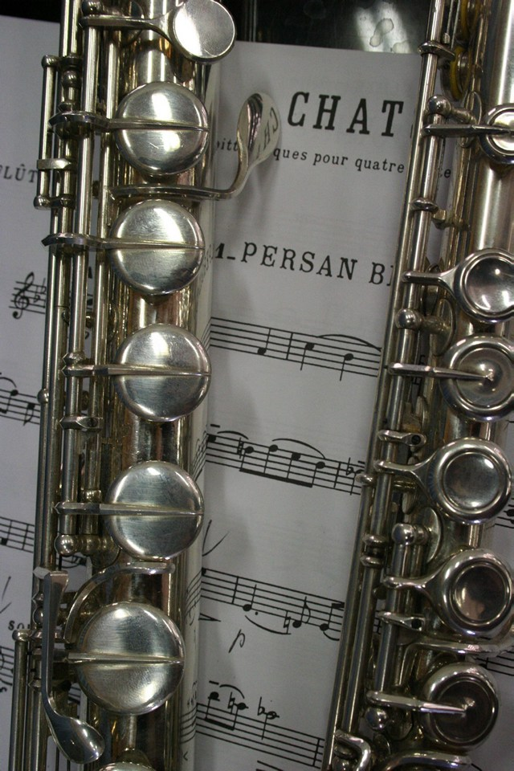

Lesekonzerte

Die Lesekonzerte sind ein eigenständiges Format des Fördervereins des Brandenburgischen Staatsorchesters Frankfurt (Oder): Literatur und Musik begegnen sich auf Augenhöhe. Ein Text wird gelesen, Musik wird gespielt – und gemeinsam entsteht ein Abend, der beide Kunstformen in ein neues Licht rückt.
Die Idee ist so einfach wie wirkungsvoll: Eine Erzählung, ein Gedicht oder ein Essay wird von einer Leserin oder einem Leser vorgetragen. Musikerinnen und Musiker des BSOF rahmen den Text musikalisch ein – manchmal als Kontrast, manchmal als Klangbild, manchmal als Dialog.
Das Format
Lesekonzerte finden in kleinen, atmosphärischen Räumen statt – in Bibliotheken, Salons oder privaten Wohnzimmern. Die Nähe zum Publikum ist gewollt: Kein großes Podium, keine Distanz, dafür echte Begegnung zwischen Künstlerinnen, Künstlern und Gästen.
Jede Veranstaltung ist einmalig – Texte und Programme werden eigens für jeden Abend zusammengestellt. So entsteht jedes Mal ein neues, unwiederholbares Erlebnis.
Eigenes Projekt des Fördervereins BSOF: Die Lesekonzerte werden vollständig vom Förderverein organisiert und finanziert. Mitglieder erhalten bevorzugten Zugang und werden persönlich zu jedem Abend eingeladen.
Mitmachen & Unterstützen
Werden Sie Mitglied und erleben Sie die nächsten Lesekonzerte hautnah – als Teil einer Gemeinschaft, die Literatur und Musik gleichermaßen liebt.
Jetzt Mitglied werden